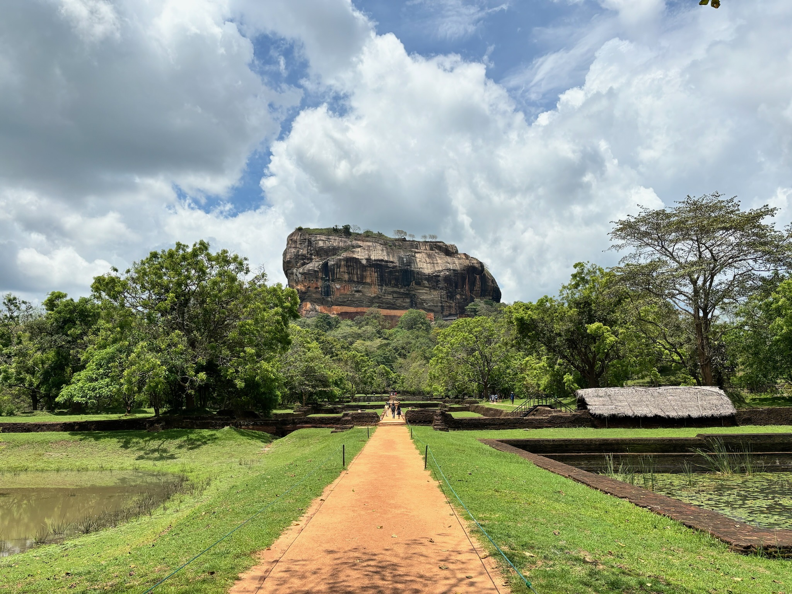

 |
走進杉林溪，彷彿踏入一條通往雲端的靜謐通道。山路蜿蜒，層層抬升的不只是海拔，更是一種逐漸遠離塵囂的心境。當城市的聲音在身後淡去，取而代之的是林間微風拂過樹梢的低語，以及雲霧在山谷間流動的無聲節奏。這一刻，時間似乎慢了下來，而人，也開始學會傾聽自然。
杉林溪的山林以深綠為底色，筆直挺立的杉木與交錯伸展的枝幹，共同構築出一幅層次分明的自然畫面。粗壯的樹枝橫越視線，如同天然的畫框，將遠方的雲海與天空輕輕收攏。陽光透過枝葉灑落，在樹皮與霧氣之間留下柔和的光影，不張揚，卻充滿存在感。這不是壯闊到令人屏息的瞬間，而是一種耐人尋味、需要靜下心來才能感受的美。
雲霧，是杉林溪最溫柔的訪客。它們時而緩緩湧上山谷，時而在林間停留，又悄然散去。雲海覆蓋著遠方的山巒，模糊了地平線的界線，也模糊了現實與想像的距離。站在高處俯瞰，彷彿世界被分成兩個層次，雲之上，是澄澈的藍天；雲之下，是靜默的森林與尚未甦醒的山谷。而我們，正好站在兩者之間，成為這場自然交會的見證者。
在這樣的時刻，人不再急著前行。腳步自然放慢，呼吸也隨之變得深長。杉林溪的美，不在於「看見了什麼」，而在於「感受到什麼」。當雲霧輕撫臉龐，當微風帶著樹葉的清香掠過鼻息，那是一種無法被完全記錄、卻深刻留存在記憶中的感受。攝影，只是試圖替這份感受留下線索。
這張影像所捕捉的，是一個介於流動與靜止之間的片刻。樹枝靜靜延展，彷彿在等待雲霧經過；雲海則不斷變化，提醒著自然的無常與流動。畫面中沒有喧囂的人群，沒有明確的敘事主角，卻因為這樣的留白，讓觀看者能夠將自己放入其中。那不只是一幅風景，而是一個可以暫時安放心靈的位置。
「走進杉林溪的雲端時刻」，不只是一次旅行的記錄，更是一段內在狀態的投射。在這片山林裡，人被允許暫時放下角色、身分與責任，只單純地存在。存在於霧氣之中，存在於樹影之下，存在於當下的每一次呼吸。雲霧遮蔽了遠方，卻也讓眼前變得更加清晰，清晰地感受到自己的渺小，也清晰地體會到自然的包容。
當我們離開杉林溪，雲霧終究會散去，旅程也會結束。但那些在雲端停留過的片刻，早已悄悄改變了觀看世界的方式。也許未來某個忙碌的瞬間，只要想起這片雲海、這些樹影，心就能再次回到那座山、那片林、那個雲霧輕繞的早晨。
而這，正是杉林溪留給人的禮物，一段走進雲端，也走回自己的時刻。